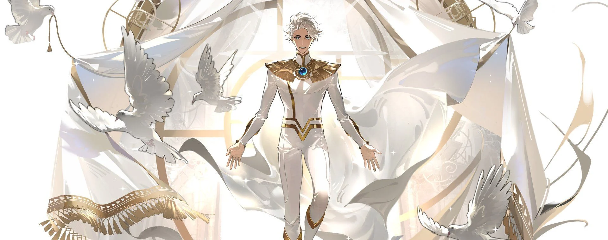
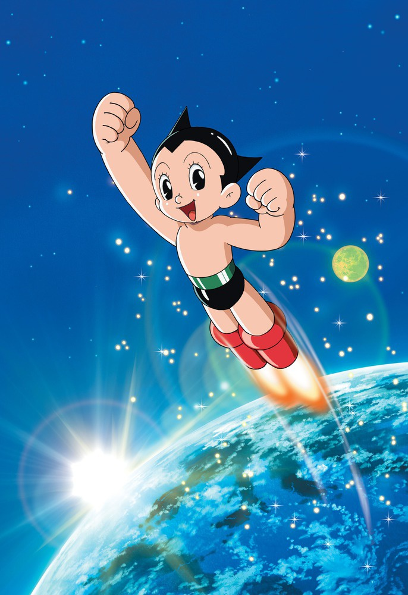
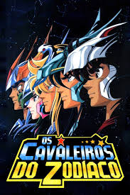
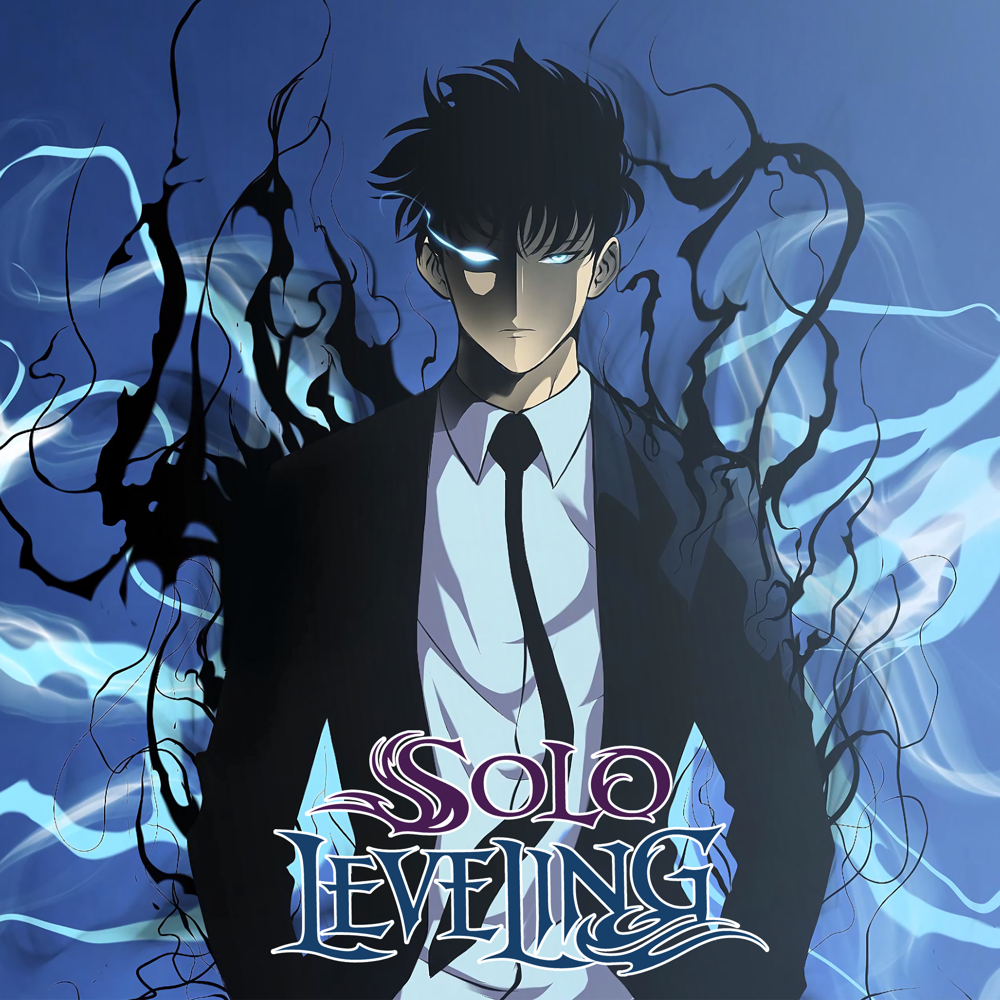
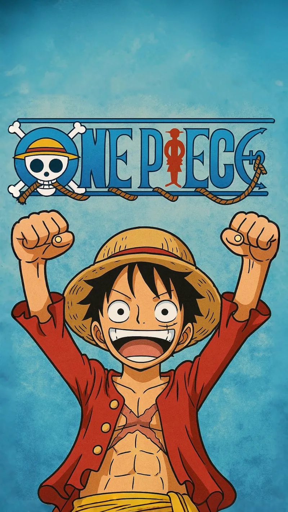
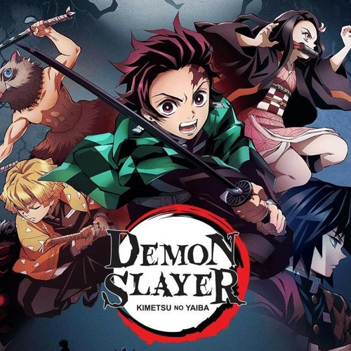
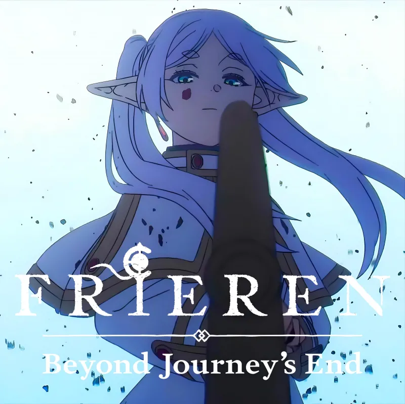
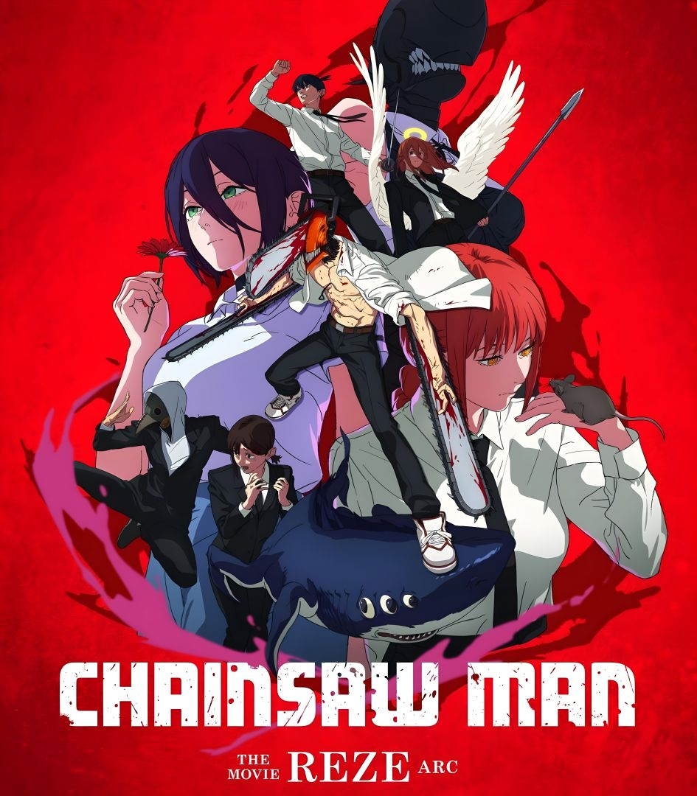

Bem Vindo(a) ao AnimesX!
Aqui apresenteremos um pouco da história dos animes no Brasil e, os 10 animes mais populares atualmente (no Brasil) com base em pesquisas recentes, aproveitem!
Como surgiram?
Os animes surgiram no Japão no início do século XX, evoluindo de técnicas tradicionais de arte e teatro para a animação influenciada pelo ocidente, consolidando-se na TV nos anos 1960 com Osamu Tezuka (Astro Boy). Ao Brasil, chegaram na década de 1960/70 (Speed Racer) e explodiram nos anos 90 com Os Cavaleiros do Zodíaco na TV Manchete
Origem dos Animes (Japão):
Pioneiros (anos 1910-1920): Os registros mais antigos, como Katsudo Shashin (1907) e Namakura Gatana (1917), mostram técnicas manuais simples, muitas vezes com recortes de papel.
Início: Os primeiros experimentos de animação no Japão começaram em 1917, mas o estilo moderno consolidou-se após a Segunda Guerra Mundial.
Influência da Disney e Pós-Guerra: Após a Segunda Guerra Mundial, a influência dos desenhos ocidentais cresceu, mas o Japão desenvolveu seu próprio estilo.
A era Tezuka (anos 60): Osamu Tezuka revolucionou a indústria com o estúdio Mushi Productions, criando a "animação limitada" (menos quadros por segundo) para reduzir custos, popularizando o estilo de olhos grandes e cabelos espetados.
Evolução e Expansão: Nos anos 70/80, gêneros como mecha (robôs) e shonen (ação) se consolidaram. Estúdios como Toei Animation e Ghibli ajudaram a espalhar os animes mundialmente.
Definição: Enquanto no ocidente "anime" refere-se especificamente à animação japonesa, no Japão o termo abrange qualquer tipo de animação.
Osamu Tezuka: Conhecido como o "pai do anime", Tezuka adaptou técnicas de cinema e mangá para TV. Astro Boy (Tetsuwan Atom) foi o primeiro anime de grande sucesso em 1963, estabelecendo o estilo de olhos grandes e animação expressiva.
Temáticas: Histórias futuristas, robôs e fantasia dominaram as primeiras décadas.

Imagem do anime Astro Boy.

Imagem do anime Cavaleiros do Zodíaco
História no Brasil
Diversas produções orientais dos anos 80, como Cavaleiros do Zodíaco e Super Campeões, chegaram ao Brasil por meio do extinto canal de televisão Rede Manchete, fazendo muito sucesso e posteriormente sendo incluídos na programação de outros canais abertos. A consolidação das animações japonesas foi durante os anos 90, quando elas eram passadas em programas infantis com apresentadores realizando brincadeiras entre os episódios.
Eduardo Miranda, chefe da divisão de cinema da Rede Manchete entre 1993 e 1999, afirma que não houve um evento especial para a vinda dos animes ao Brasil, e que eles foram trazidos por conta da demanda por programações infantis das televisões da época, e por serem mais uma opção entre os desenhos americanos e europeus. Além disso, Eduardo diz que Cavaleiros do Zodíaco foi pioneiro na questão da popularização, “Eu costumo dividir a questão dos animes no Brasil entre A.C e D.C, antes de Cavaleiros e depois de Cavaleiros.” Ele conclui dizendo que o anime foi um fenômeno, e que isso se deve por conta deles terem trazido o mesmo hábito das novelas para as animações.
Porém, no início dos anos 2000, os animes perderam sua força e espaço na TV aberta, restando poucos ainda no ar, e em sua maioria em canais fechados. A grande crescente de serviços de streaming no mercado surgiu como um passo natural para as animações japonesas, e as plataformas, percebendo a sua popularidade, começaram a investir nelas. A Netflix teve um papel muito importante para que essas produções voltassem a ser populares como eram nos anos 90, visto que, quando a plataforma de streaming começou a se tornar conhecida no Brasil, ela já tinha em seu catálogo animes que hoje são muito conhecidos no país, como Death Note, Naruto, Bleach, One Piece, entre outros. Além disso, também temos o exemplo de Demon Slayer, que foi um animação lançada em 2019, e ficou bem conhecida na região em 2021, ao ser adicionada à Netflix.
Com o passar do tempo, a plataforma passou a produzir animes de autoria própria, como Kengan Ashura e Beastars, ou até adquirir os direitos de produção de animações já conhecidas e fazer novas temporadas, que foi o que aconteceu com The Seven Deadly Sins, e o que está acontecendo hoje com JoJo’s Bizarre Aventures. No caso de JoJo’s, que já era um anime muito conhecido tanto no Brasil quanto no mundo todo, a Netflix comprou os direitos e produziu a parte 6, chamada de Stone Ocean, que será dividida em 3 partes. Essa temporada teve os primeiros 12 episódios lançados no dia 1 de dezembro de 2021, e os outros 24 capítulos ficarão disponíveis em breve.
No Brasil, existem duas plataformas de streaming que são totalmente voltadas para animes: Crunchyroll e Funimation. A primeira, que está em atividade desde 2006, chegou à marca de 3 milhões de assinantes pagos no mundo todo em 2020. No ano de 2021, a empresa quase dobrou o seu número de usuários premium, ultrapassando a marca de 5 milhões de pessoas, de acordo com números divulgados pelos próprios funcionários. O fã de animes Ygor Barros, afirma que essas duas plataformas possuem uma importância para as animações japonesas no Brasil, por conta de elas serem um meio legalizado que faz com que os fãs tenham acesso aos mais novos lançamentos, praticamente no mesmo momento em que eles ficam disponíveis no Japão. “Um exemplo disso é o que aconteceu com o episódio 1000 de One Piece, a Crunchyroll lançou legendado em português, na mesma hora em que foi lançado no próprio Japão”, disse o estudante.
No dia 9 de dezembro de 2020, a Funimation anunciou a compra da Crunchyroll, a absorveu e deixou a Crunchyroll como plataforma principal, transferindo todo catálogo da Funimation para a lá.
Imagem das plataformas de streaming Crunchyroll e Funimation
Agora que já entendemos um pouco da história dos animes, vamos ao ponto principal de hoje!
Qual são os 10 animes mais populares atualmente no Brasil?
Confira agora algum dos títulos mais assistidos nacionalmente.
Confira agora algum dos títulos mais assistidos nacionalmente.




